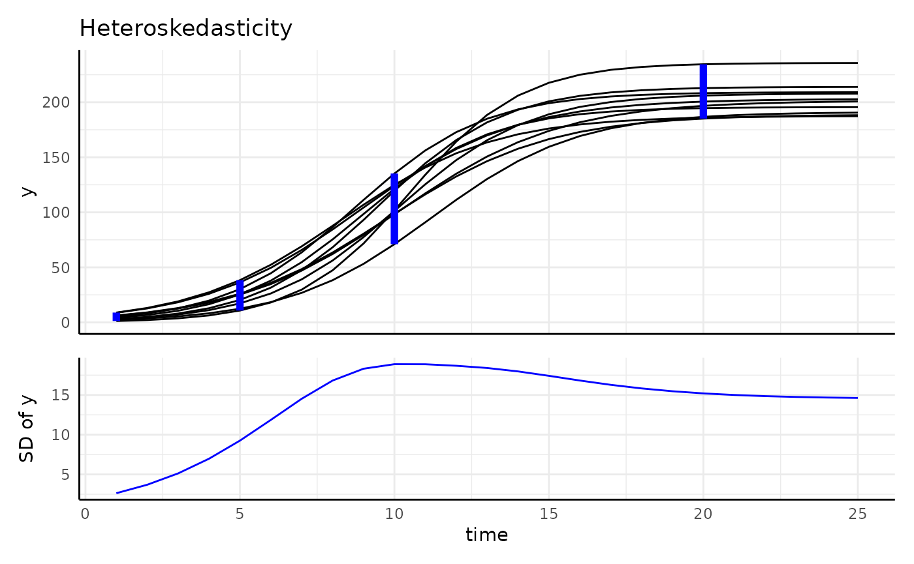
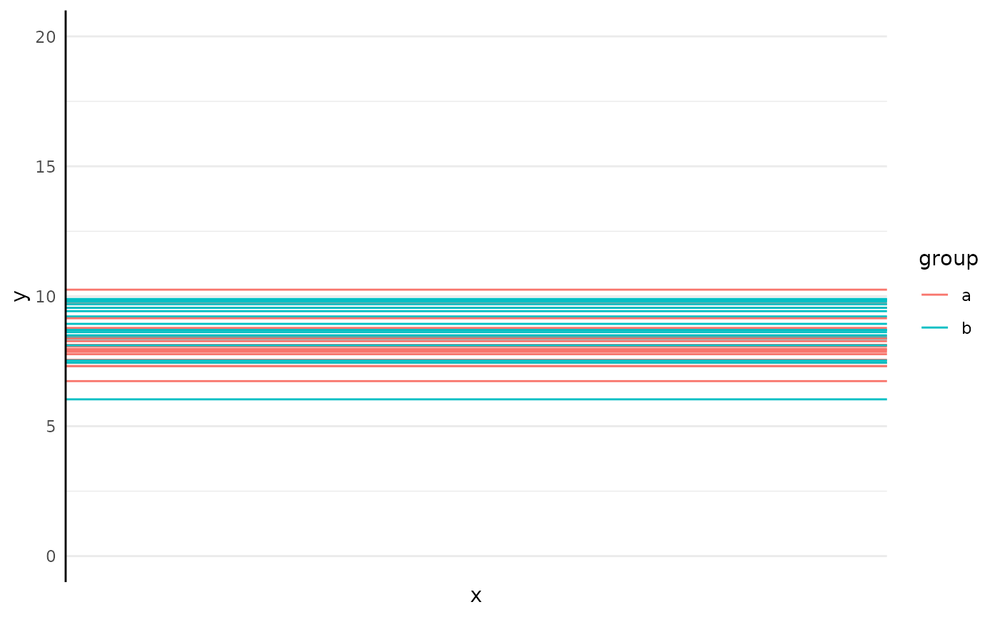

Advanced Growth Modeling with `pcvr`
pcvr v1.1.0.0
Josh Sumner
Source:vignettes/articles/pcvrTutorial_agm.Rmd
pcvrTutorial_agm.RmdOutline
-
pcvrGoals - Load Package
- Why Longitudinal Modeling?
- Why Bayesian Modeling?
- Supported Curves
growthSSfitGrowth-
growthPlot/Model Visualization - Hypothesis testing
- Threshold models
- Using
brmsdirectly - Resources
pcvr Goals
Currently pcvr aims to:
- Make common tasks easier and consistent
- Make select Bayesian statistics easier
There is room for goals to evolve based on feedback and scientific needs.
Load package
Pre-work was to install R, Rstudio, and pcvr with
dependencies.
## Loading required package: Rcpp## Loading 'brms' package (version 2.22.0). Useful instructions
## can be found by typing help('brms'). A more detailed introduction
## to the package is available through vignette('brms_overview').##
## Attaching package: 'brms'## The following object is masked from 'package:stats':
##
## arWhy Longitudinal Modeling?
plantCV allows for user friendly high throughput image
based phenotyping
. . .
Resulting data follows individuals over time, which changes our statistical needs.

Why Longitudinal Modeling? 5
r1 <- range(simdf[simdf$time == 1, "y"])
r2 <- range(simdf[simdf$time == 5, "y"])
r3 <- range(simdf[simdf$time == 10, "y"])
r4 <- range(simdf[simdf$time == 20, "y"])
main <- ggplot(simdf, aes(time, y, group = interaction(group, id))) +
geom_line() +
annotate("segment", x = 1, xend = 1, y = r1[1], yend = r1[2], color = "blue", linewidth = 2) +
annotate("segment", x = 5, xend = 5, y = r2[1], yend = r2[2], color = "blue", linewidth = 2) +
annotate("segment", x = 10, xend = 10, y = r3[1], yend = r3[2], color = "blue", linewidth = 2) +
annotate("segment", x = 20, xend = 20, y = r4[1], yend = r4[2], color = "blue", linewidth = 2) +
labs(title = "Heteroskedasticity") +
pcv_theme() +
theme(axis.title.x = element_blank(), axis.text.x = element_blank())
sigma_df <- aggregate(y ~ group + time, data = simdf, FUN = sd)
sigmaPlot <- ggplot(sigma_df, aes(x = time, y = y, group = group)) +
geom_line(color = "blue") +
pcv_theme() +
labs(y = "SD of y") +
theme(plot.title = element_blank())
design <- c(
area(1, 1, 4, 4),
area(5, 1, 6, 4)
)
hetPatch <- main / sigmaPlot + plot_layout(design = design)
hetPatch
Why Bayesian Modeling?
Bayesian modeling allows us to account for all these problems via a more flexible interface than frequentist methods.
. . .
Bayesian modeling also allows for non-linear, probability driven hypothesis testing.
Why Bayesian Modeling? 2
In a Bayesian context we flip “random” and “fixed” elements.
| Fixed | Random | Interpretation | |
|---|---|---|---|
| Frequentist | True Effect | Data | If the True Effect is 0 then there is an % chance of estimating an effect of this size or more. |
| Bayesian | Data | True Effect | Given the estimated effect from our data there is a P probability of the True Effect being a difference of at least X |
Why Bayesian Modeling? 3
Before moving on we should note that each group in your data will have parameters fit to it. If you have many groups then fitting models to only a few groups at a time is likely to make your life easier. Larger models will fit, but they can take a very long time.
It’s generally been easier for the authors to fit 50 models each with 4 groups in them then compare across models than to fit 1 model with 200 groups in it.
Supported Growth Models
There are 13 main growth models supported in pcvr.
Several are shown next, including asymptotic and non-asymptotic options.
Supported Growth Models
There are an additional 3 sigmoidal models based on the Extreme Value Distribution. Those are Weibull, Frechet, and Gumbel. The authors generally prefer Gompertz to these options but for your data it is possible that these could be a better fit.
Supported Growth Models 2
There are also two double sigmoid curves intended for use with recovery experiments.
## Warning: Removed 1 row containing missing values or values outside the scale range
## (`geom_line()`).Supported Growth Models 3
Generalized Additive Models (GAMs) are supported but discouraged due to poor interpretability.

Supported Growth Models 4
Intercept only models are supported, although they are only intended for use in segmented models or to represent homoskedasticity as a sub-model.
set.seed(123)
ggplot(
data.frame(
yint = c(rnorm(20, 8, 1), rnorm(20, 9, 1)),
group = c(rep("a", 10), rep("b", 10))
),
aes(x = 1:25)
) +
geom_hline(aes(yintercept = yint, color = group)) +
scale_y_continuous(limits = c(0, 20)) +
pcv_theme() +
labs(y = "y", x = "x")
Supported Growth Models 5
Segmented growth models are also supported using “model1 + model2”
syntax in both growthSim and growthSS.
. . .
For now we will focus on single models but there will be examples of segmented models later on.
Supported Growth Models 6
The “decay” keyword can be used to specify a decay model instead. For now we will focus on growth models as these constitute the large majority of models used in plant phenotyping.
Supported Growth Models 7
Hierarchical models can be specified by adding covariates to the
model formula and specifying models for those covariates in the
hierarchy argument.
A hierarchical formula would then be written as
y ~ time + covar | id / group and we could specify to only
model the A parameter as being modeled by
covar by adding
hierarchy = list("A" = "int_linear").
Survival Models
Survival models can also be specified using the “survival” keyword.
Using the brms backend these models use the weibull distribution by
default but “binomial” family can also be specified by
model = "survival binomial".
For details please see the growthSS documentation.
Maxima/Minima Models
bragg, lorentz, and beta Maxima/Minima models are available in
growthSS, but should only be used for biologically
appropriate settings. For general trends where data may increase then
decrease some consider changepoint models or splines before using
these.
growthSS - form
With a model specified a rough formula is required to parse your data to fit the model.
The layout of that formula is:
outcome ~ time|individual/group
growthSS - form 2
Here we would use y~time|id/group
simdf <- growthSim("gompertz",
n = 20, t = 25,
params = list(
"A" = c(200, 160),
"B" = c(13, 11),
"C" = c(0.2, 0.25)
)
)
head(simdf)## id group time y
## 1 id_1 a 1 0.004058413
## 2 id_1 a 2 0.022060411
## 3 id_1 a 3 0.091828381
## 4 id_1 a 4 0.305290892
## 5 id_1 a 5 0.839871042
## 6 id_1 a 6 1.969862435
growthSS - form 3
Generally it makes sense to visually check that your formula covers your experimental design.
Note that it is fine for id to be duplicated between groups, but not within groups
growthSS - sigma
Recall the heteroskedasticity problem, shown again with our simulated data:
# \ echo: false
sigma_df <- aggregate(y ~ group + time, data = simdf, FUN = sd)
ggplot(sigma_df, aes(x = time, y = y, group = group)) +
geom_line(aes(color = group)) +
pcv_theme() +
labs(y = "SD of y") +
theme(plot.title = element_blank())
growthSS - sigma
There are lots of ways to model a trend like that we see for sigma.
pcvr allows any of the model options in
growthSS to also be applied to model variance.
draw_gomp_sigma <- function(x) {
return(23 * exp(-21 * exp(-0.22 * x)))
}
ggplot(sigma_df, aes(x = time, y = y)) +
geom_line(aes(group = group), color = "gray60") +
geom_hline(aes(yintercept = 12, color = "Homoskedastic"),
linetype = 5, key_glyph = draw_key_path
) +
geom_abline(aes(slope = 0.8, intercept = 0, color = "Linear"),
linetype = 5, key_glyph = draw_key_path
) +
geom_smooth(
method = "gam", aes(color = "Spline"), linetype = 5,
se = FALSE, key_glyph = draw_key_path
) +
geom_function(fun = draw_gomp_sigma, aes(color = "Gompertz"), linetype = 5) +
scale_color_viridis_d(option = "plasma", begin = 0.1, end = 0.9) +
guides(color = guide_legend(override.aes = list(linewidth = 1, linetype = 1))) +
pcv_theme() +
theme(legend.position = "bottom") +
labs(y = "SD of y", title = "Several sigma options", color = "")## `geom_smooth()` using formula = 'y ~ s(x, bs = "cs")'
growthSS - Intercept sigma
| Pros | Cons |
|---|---|
| Faster model fitting | Very inaccurate intervals at early timepoints |
ggplot(sigma_df, aes(x = time, y = y, group = group)) +
geom_hline(aes(yintercept = 13.8, color = "Homoskedastic"), linetype = 5, key_glyph = draw_key_path) +
geom_line(aes(color = group)) +
scale_color_manual(values = c(scales::hue_pal()(2), "gray40")) +
pcv_theme() +
labs(y = "SD of y", color = "Sigma") +
theme(plot.title = element_blank(), legend.position = "bottom")
growthSS - Linear sigma
| Pros | Cons |
|---|---|
| Models still fit quickly | Variance tends to increase non-linearly |
| Easy testing on variance model |
p <- ggplot(sigma_df, aes(x = time, y = y, group = group)) +
geom_smooth(aes(group = "linear", color = "Linear"),
linetype = 5,
method = "lm", se = FALSE, formula = y ~ x
) +
geom_line(aes(color = group)) +
scale_color_manual(values = c(scales::hue_pal()(2), "gray40")) +
pcv_theme() +
labs(y = "SD of y", color = "Sigma") +
theme(plot.title = element_blank(), legend.position = "bottom")
growthSS - Gompertz sigma
| Pros | Cons |
|---|---|
| Models fit much faster than splines | Slightly slower than linear sub-models |
| Variance is often asymptotic | Requires priors on sigma model |
| Easy testing on variance model |
Note that these traits are broadly true of logistic and monomolecular sub models as well.
draw_gomp_sigma <- function(x) {
return(22 * exp(-9 * exp(-0.27 * x)))
} # guesses at parameters
p <- ggplot(sigma_df, aes(x = time, y = y, group = group)) +
geom_function(fun = draw_gomp_sigma, aes(group = 1, color = "Gompertz"), linetype = 5) +
geom_line(aes(color = group)) +
scale_color_manual(values = c(scales::hue_pal()(2), "gray40")) +
pcv_theme() +
labs(y = "SD of y", color = "Sigma") +
theme(plot.title = element_blank(), legend.position = "bottom")
growthSS - Spline sigma
| Pros | Cons |
|---|---|
| Very flexible and accurate model for sigma | Significantly slower than other options |
| Fewer priors | Splines can be a black-box |
p <- ggplot(sigma_df, aes(x = time, y = y, group = group)) +
geom_smooth(
method = "gam", aes(group = "Spline", color = "Spline"),
linetype = 5, se = FALSE, formula = y ~ s(x, bs = "cs")
) +
geom_line(aes(color = group)) +
scale_color_manual(values = c(scales::hue_pal()(2), "gray40")) +
pcv_theme() +
labs(y = "SD of y", color = "Sigma") +
theme(plot.title = element_blank(), legend.position = "bottom")
growthSS - other sigma models
You can always add a new sigma formula if something else fits your needs better.
growthSS - Distributional Models
Here we have limited the examples to talk about sigma, a parameter of the Student T distribution that our model belongs to. Written another way we might say all the previous methods are modeling:
Y ~ T(mu ~ main growth formula, sigma ~ sigma formula, nu ~ 1)
growthSS - Distributional Models 2
In pcvr the Student T family is the default for these
models, but other distributions are supported through
"distribution: model" syntax.
In general this is only for special cases where the Gaussian/T does
not capture some important quality of the data. An obvious example could
be leaf counts, which might be modeled as
"poisson: monomolecular", for instance.
growthSS - Distributional Models 3
You can specify sigma as a list of formulas to model different distributional parameters separately. Most of the time this is overkill and adds unnecessary complexity, but the option exists for certain cases such as ZINB where modeling mean, shape, and zero inflation per group may make sense.
For details on supported families and their parameterization try
running growthSS(..., sigma=NULL,...) and examining the
priors, or checking ?brmfamily.
growthSS - priors
Bayesian statistics combine prior distributions and collected data to form a posterior distribution.
. . .
Luckily, in the growth model context it is pretty easy to set “good priors”.
growthSS - priors
“Good priors” are generally mildly informative, but not very strong.
They provide some well vetted evidence, but do not overpower the data.
growthSS - priors
For our setting we know growth is positive and we should have basic impressions of what sizes are possible.
At the “weakest” side of these priors we at least know growth is positive and the camera only can measure some finite space.
growthSS - priors 2
Default priors in growthSS are log-normal
This has the benefit of giving a long right tail and strictly positive values while only requiring us to provide .
growthSS - priors 4
Those distributions can still be somewhat abstract, so we can simulate draws from the priors and see what those values yield in our growth model.
fitGrowth
Now that we have the components for our model from
growthSS we can fit the model with
fitGrowth.
fitGrowth 2
This will call Stan outside of R to run Markov Chain
Monte Carlo (MCMC) to get draws from the posterior distributions. We can
control how Stan runs with additional arguments to
fitGrowth, although the only required argument is the
output from growthSS.
fitGrowth 2
Here we specify our ss argument to be the output from
growthSS and tell the model to use 4 cores so that the
chains run entirely in parallel, but the rest of this model is using
defaults.
fit <- fitGrowth(
ss = ss, cores = 4,
iter = 2000, chains = 4, backend = "cmdstanr"
)
fitGrowth 2
Note that there are lots of arguments that can be passed to
brms::brm via fitGrowth.
. . .
One that can be very helpful for fitting complex models is the
control argument, where we can control the sampler’s
behavior.
fitGrowth 2
adapt_delta and tree_depth are both used to
reduce the number of “divergent transitions” which are times that the
sampler has some departure from the True path and which can compromise
the results.
fitGrowth 3
fitGrowth returns a brmsfit object, see
?brmsfit and methods(class="brmsfit") for
general information.
. . .
Within pcvr there are several functions for visualizing
these objects.
growthPlot
growthPlot can be used to plot credible intervals of
your model.
growthPlot(fit, form = ss$pcvrForm, df = ss$df)Model Visualization 2
These plots can show one of the benefits of an asymptotic sub model well.
Here we check our model predictions to 35 days.
growthPlot(fit, form = ss$pcvrForm, df = ss$df, timeRange = 1:35)Model Visualization 2
And now we check those predictions from a spline model, where the basis functions are not suited for data past day 25.
growthPlot(fit_spline, form = ss_spline$pcvrForm, df = ss_spline$df, timeRange = 1:35)Model Visualization 3
We can also plot the posterior distributions and test hypotheses with
brmViolin.
Here hypotheses are tested with brms::hypothesis.
brmViolin(fit, ss, hypothesis = ".../A_groupa > 1.05")## Loading required package: rstan## Loading required package: StanHeaders##
## rstan version 2.32.7 (Stan version 2.32.2)## For execution on a local, multicore CPU with excess RAM we recommend calling
## options(mc.cores = parallel::detectCores()).
## To avoid recompilation of unchanged Stan programs, we recommend calling
## rstan_options(auto_write = TRUE)
## For within-chain threading using `reduce_sum()` or `map_rect()` Stan functions,
## change `threads_per_chain` option:
## rstan_options(threads_per_chain = 1)Hypothesis Testing
brms::hypothesis allows for incredibly flexible
hypothesis testing.
Here we test for an asymptote for group A at least 20% larger than that of group B.
brms::hypothesis(fit, "A_groupa > 1.2 * A_groupb")$hyp## Hypothesis Estimate Est.Error CI.Lower CI.Upper Evid.Ratio
## 1 (A_groupa)-(1.2*A_groupb) > 0 6.290106 4.925797 -1.74309 14.41414 8.90099
## Post.Prob Star
## 1 0.899Threshold models
Segmented Models are specified using “model1 + model2” syntax, with “+” representing a change point.
. . .
Currently only two phases (one changepoint) are recommended. More will work but they will slow down the MCMC and may require more fine tuning.
. . .
These segmented models can also be used to specify sub-models of distributional parameters.
linear + linear
simdf <- growthSim(
model = "linear + linear",
n = 20, t = 25,
params = list("linear1A" = c(15, 12), "changePoint1" = c(8, 6), "linear2A" = c(3, 5))
)
ss <- growthSS(
model = "linear + linear", form = y ~ time | id / group, sigma = "spline",
start = list("linear1A" = 10, "changePoint1" = 5, "linear2A" = 2),
df = simdf, type = "brms"
)
fit <- fitGrowth(ss, backend = "cmdstanr", iter = 500, chains = 1, cores = 1)
growthPlot(fit = fit, form = ss$pcvrForm, df = ss$df)linear + logistic
simdf <- growthSim("linear + logistic",
n = 20, t = 25,
params = list(
"linear1A" = c(15, 12), "changePoint1" = c(8, 6),
"logistic2A" = c(100, 150), "logistic2B" = c(10, 8),
"logistic2C" = c(3, 2.5)
)
)
ss <- growthSS(
model = "linear + logistic", form = y ~ time | id / group, sigma = "spline",
list(
"linear1A" = 10, "changePoint1" = 5,
"logistic2A" = 100, "logistic2B" = 10, "logistic2C" = 3
),
df = simdf, type = "brms"
)
fit <- fitGrowth(ss, backend = "cmdstanr", iter = 500, chains = 1, cores = 1)
growthPlot(fit = fit, form = ss$pcvrForm, df = ss$df)
linear + gam
ss <- growthSS(
model = "linear + gam", form = y ~ time | id / group, sigma = "int",
list("linear1A" = 10, "changePoint1" = 5),
df = simdf, type = "brms"
)
fit <- fitGrowth(ss, backend = "cmdstanr", iter = 500, chains = 1, cores = 1)
growthPlot(fit = fit, form = ss$pcvrForm, df = ss$df)
linear + linear + linear
simdf <- growthSim("linear + linear + linear",
n = 25, t = 50,
params = list(
"linear1A" = c(10, 12), "changePoint1" = c(8, 6),
"linear2A" = c(1, 2), "changePoint2" = c(25, 30), "linear3A" = c(20, 24)
)
)
ss <- growthSS(
model = "linear + linear + linear", form = y ~ time | id / group, sigma = "spline",
list(
"linear1A" = 10, "changePoint1" = 5,
"linear2A" = 2, "changePoint2" = 15,
"linear3A" = 5
), df = simdf, type = "brms"
)
fit <- fitGrowth(ss, backend = "cmdstanr", iter = 500, chains = 1, cores = 1)
plot <- growthPlot(fit = fit, form = ss$pcvrForm, df = ss$df)
int + int with segmented sigma
ss <- growthSS(
model = "int + int", form = y ~ time | id / group, sigma = "int + int",
list(
"int1" = 10, "changePoint1" = 10, "int2" = 20, # main model
"sigmaint1" = 10, "sigmachangePoint1" = 10, "sigmaint2" = 10
), # sub model
df = simdf, type = "brms"
)
fit <- fitGrowth(ss, backend = "cmdstanr", iter = 500, chains = 1, cores = 1)
plot <- growthPlot(fit = fit, form = ss$pcvrForm, df = ss$df)int + linear model and submodel
ss <- growthSS(
model = "int + linear", form = y ~ time | id / group, sigma = "int + linear",
list(
"int1" = 10, "changePoint1" = 10, "linear2A" = 20,
"sigmaint1" = 10, "sigmachangePoint1" = 10, "sigmalinear2A" = 10
),
df = simdf, type = "brms"
)
fit <- fitGrowth(ss, backend = "cmdstanr", iter = 500, chains = 1, cores = 1)
plot <- growthPlot(fit = fit, form = ss$pcvrForm, df = ss$df, timeRange = 1:40)int+logistic with int+gam sub model
ss <- growthSS(
model = "int+logistic", form = y ~ time | id / group, sigma = "int + spline",
list(
"int1" = 5, "changePoint1" = 10,
"logistic2A" = 130, "logistic2B" = 10, "logistic2C" = 3,
"sigmaint1" = 5, "sigmachangePoint1" = 15
),
df = simdf, type = "brms"
)
fit <- fitGrowth(ss, backend = "cmdstanr", iter = 500, chains = 1, cores = 1)
plot <- growthPlot(fit = fit, form = ss$pcvrForm, df = ss$df)
Example survival model
df <- growthSim("logistic",
n = 20, t = 25,
params = list("A" = c(200, 160), "B" = c(13, 11), "C" = c(3, 3.5))
)
ss <- growthSS(
model = "survival weibull", type = "brms",
form = y > 100 ~ time | id / group,
df = df, start = c(0, 5)
)
fit <- fitGrowth(ss, iter = 600, cores = 2, chains = 2, backend = "cmdstanr")
plot <- growthPlot(fit = fit, form = ss$pcvrForm, df = ss$df)Here the input data is standard phenotype data with a cutoff to represent the event (germination for instance) on the left hand side of the formula.
Example count model
df <- growthSim("count: logistic",
n = 20, t = 25,
params = list("A" = c(10, 12), "B" = c(13, 11), "C" = c(3, 3.5))
)
ss <- growthSS(
model = "poisson: logistic", # specify poisson family
form = y ~ time | id / group,
sigma = NULL, # poisson only has one parameter
df = df, start = list("A" = 8, "B" = 10, "C" = 3)
)
fit <- fitGrowth(ss, iter = 2000, cores = 4, chains = 4)
plot <- growthPlot(fit = fit, form = ss$pcvrForm, df = ss$df)Example hierarchical model
simdf <- growthSim(
"logistic",
n = 20, t = 25,
params = list("A" = c(200, 160), "B" = c(13, 11), "C" = c(3, 3.5))
)
simdf$covar <- stats::rnorm(nrow(simdf), 10, 1)
ss <- growthSS(
model = "logistic",
form = y ~ time + covar | id / group,
sigma = "logistic",
list(
"AI" = 100, "AA" = 5,
"B" = 10, "C" = 3,
"sigmaA" = 10, "sigmaB" = 10, "sigmaC" = 3
),
df = simdf, type = "brms",
hierarchy = list("A" = "int_linear")
)
fit <- fitGrowth(ss, iter = 1000, cores = 4, chains = 4)
plot <- growthPlot(fit = fit, form = ss$pcvrForm, df = ss$df)Example hierarchical model
Note for plotting hierarchical models a hierarchy_value
can be specified and defaults to the mean of the covar in
this case.

Evaluating your models
John Kruschke wrote a paper on the Bayesian Analysis and Reporting Guidelines (BARG) to aid in transparency and reproducibility when using Bayesian methods.
In pcvr some of what Kruschke recommends can be accessed from a
model/list of models using the barg function, see
?barg for details on what that entails.
The brms::add_criterion function can be used to add LOO
IC or WAIC values to models, which can be easily compared against each
other using brms::loo_compare. The best fitting model is
displayed first, with others ranked relative to that model. Differences
in elpd of at least 5 times the standard error are generally considered
meaningful. These information criteria are unlikely to help make
decisions about small changes to a model but may be useful in
considering whether a changepoint improves the model fit or not, as an
example.
Using brms directly
These functions are all to help use common growth models more easily.
The choices in pcvr are a small subset of what is
possible with brms, which itself is more limited than
Stan.
Using brms directly
Our gompertz sigma model looks like this in brms:
prior1 <- prior(gamma(2, 0.1), class = "nu", lb = 0.001) +
prior(lognormal(log(130), .25), nlpar = "A", lb = 0) +
prior(lognormal(log(12), .25), nlpar = "B", lb = 0) +
prior(lognormal(log(1.2), .25), nlpar = "C", lb = 0) +
prior(lognormal(log(25), .25), nlpar = "subA", lb = 0) +
prior(lognormal(log(20), .25), nlpar = "subB", lb = 0) +
prior(lognormal(log(1.2), .25), nlpar = "subC", lb = 0)
form_b <- bf(y ~ A * exp(-B * exp(-C * time)),
nlf(sigma ~ subA * exp(-subB * exp(-subC * time))),
A + B + C + subA + subB + subC ~ 0 + group,
autocor = ~ arma(~ time | sample:group, 1, 1),
nl = TRUE
)
fit_g2 <- brm(form_b,
family = student, prior = prior1, data = simdf,
iter = 1000, cores = 4, chains = 4, backend = "cmdstanr", silent = 0,
control = list(adapt_delta = 0.999, max_treedepth = 20),
init = 0
) # chain initialization at 0 for simplicityUsing brms directly
It can be more work to try new options in brms or
Stan, but if you have a situation not well represented by
the existing models then it may be necessary.
Resources
If you run into a novel situation please reach out and we will try to
come up with a solution and add it to pcvr if possible.
Good ways to reach out are the help-datascience slack channel and pcvr github repository.